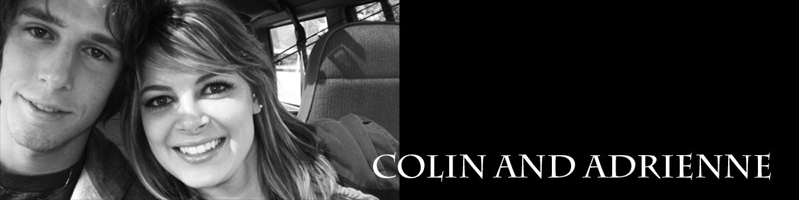

------------------- Welcome to Colin and Adrienne’s “Breakfast at Tiffany’s” wedding website! -------------------
The big day is fast approaching (08/08/08), and we are excited to have you all join us on this special day. As you know by now, both the wedding ceremony and the reception/dinner will be held at the rural home of Colin’s parents, David and Janet Parrish, located on the outskirts of Paris, Ontario. The Parrishes are in the midst of renovating a 1960’s former public school building, so for those who have not visited before, don’t bother looking for a traditional – style residence. Rather, it’s a grey, one-storey, flat-roofed building. Look for the white wedding tents on the east side of the property and you’ll know you’ve arrived. If you didn’t receive a map or if the directions aren’t clear, please feel free to email the Parrishes at parrishjanet@hotmail.com for further clarification.
If you feel you’d like to stay overnight, there are a limited number of hotels in the general area. For guests travelling from Hamilton, there is the Best Western Brant Park Inn (519-753-8652) and The Days Inn (519-759-2700) both located at Highway 403 and the Wayne Gretzky Parkway, in Brantford. For Highway 401 travellers, there is the Best Western (519-623-4600), Future Inns (519-622-1505) and the Holiday Inn (519-658-4601), all in the vicinity of Highway 401 and Highway 24 / Hespeler Road, Cambridge. Finally, in downtown Paris there is the Arlington Hotel, a stately, 24 room facility that may be reached at 519-442-1019. Please note: calls to each of these hotels indicate a very limited number of rooms currently available for August 8/08.
The wedding theme is “Breakfast at Tiffany’s”, a tribute to both the 1960’s and Audrey Hepburn’s elegant style and carefree attitude! You’ll be seated for dinner at a famous New York City landmark table, complete with Tiffany blue adornments. We hope you’ll let us snap your photo wearing our Breakfast at Tiffany’s props for a fun memory of the day.
The ceremony (to begin promptly at 5 p.m.), will be held outdoors, under the Tiffany blue sky, weather permitting. In the event of inclement weather, we will move the service into the tent. A buffet dinner, to be served at 7:30 p.m., will also be held in our wedding tent on the property. Please dress appropriately for the weather as well as the outdoor setting. Hopefully you’ll need sunglasses and not an umbrella!The dinner menu will have a variety of choices. If you have any dietary constraints or allergies, please let us know and we will ask our caterer to do his best to accommodate these.
In September, Colin and Adrienne will both be attending Ryerson University in Toronto (Colin in Mechanical Engineering and Adrienne in Arts and Contemporary Studies). Since both have previously lived away from home while attending university, they have already acquired much of the household equipment needed for their new life together. However, they have assembled a wish list of things that would be useful to them. Rather than registering at individual stores, their complete list of items is provided herein, accompanied by various locations at which they may be purchased.
We hope to see you on Friday the eighth of August, for a time of celebration, fun and feasting!
Click here for the registry list!
Registry Instructions:
Upon clicking the link above, you will be directed to the registry list. To the right of each item on the list is a dark blue link which says "Click here to buy!". If you intend to purchase that item, or have already purchased it, clicking this link will remove that item from the list to ensure the same item is not purchased more than once.
*Note: Clicking the "Click here to buy!" link does not actually purchase the item.